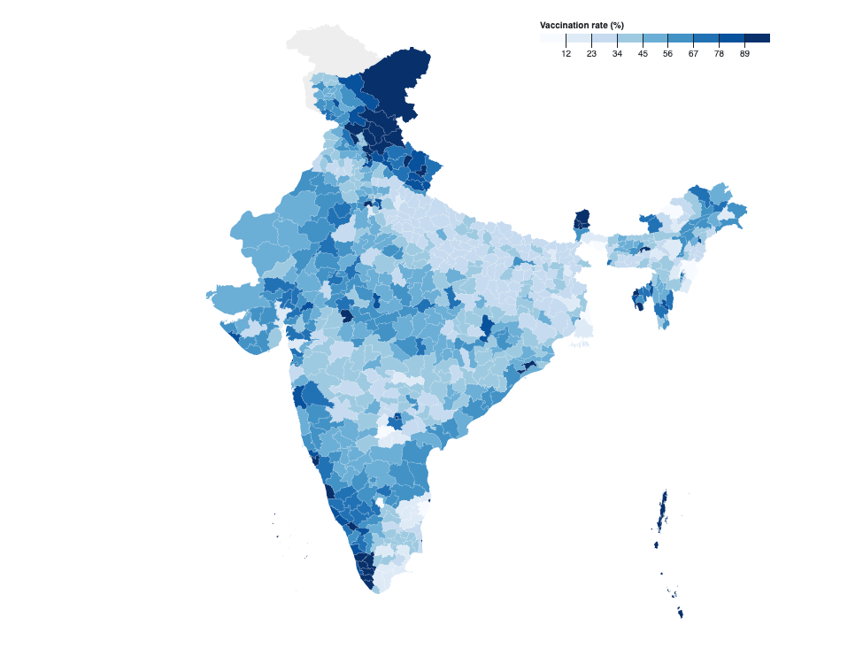
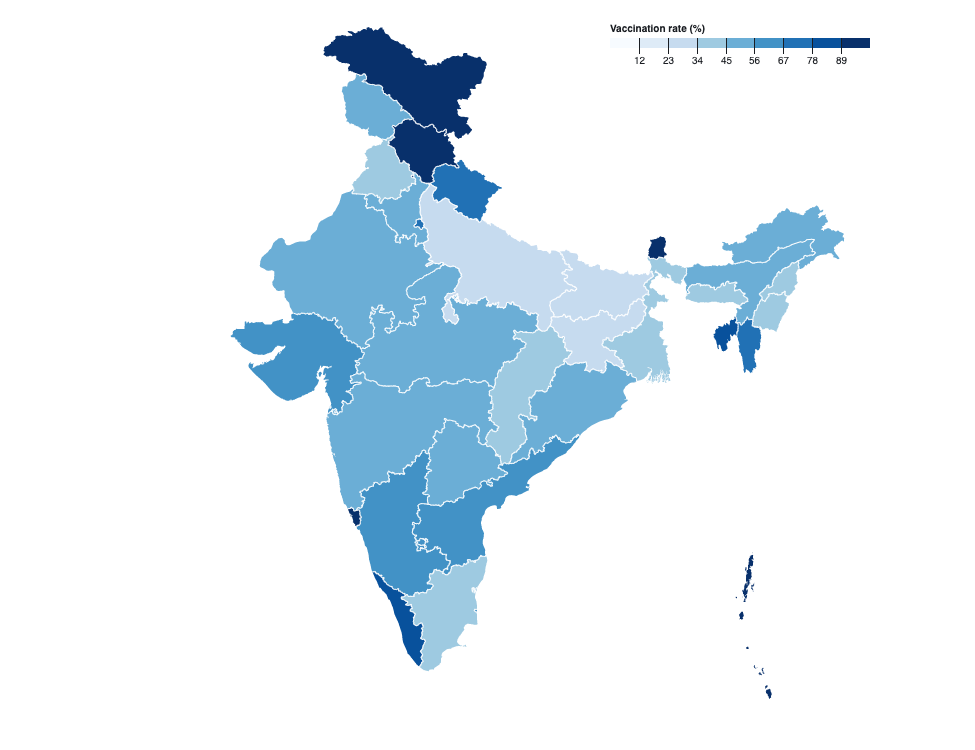
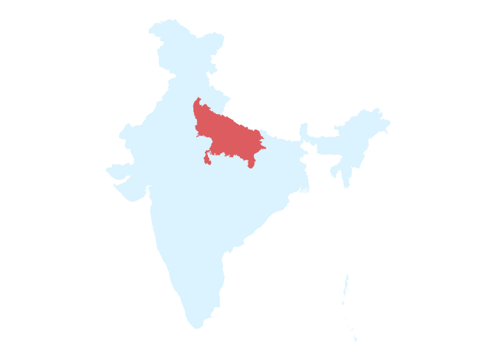

Johns Hopkins University · 2021 · Geospatial
Tracking vaccination coverage across India
A web app that tracked India's vaccination coverage down to the district, built in collaboration with Johns Hopkins in 2021.

Why district-level
India ran its vaccine campaign across roughly seven hundred districts, and a national number hides almost everything worth knowing. The dashboard, built with a team at Johns Hopkins, reported coverage at that granularity through choropleths, so a reader could find the place they actually lived instead of a state average.
Reading a crowded map
Coverage was binned into bands and each district shaded by the one it fell into, which keeps the eye on differences between neighbours rather than on decimal points. The trouble was the small, dense districts around the big cities: they collapse to a few pixels and vanish, so those regions were lifted into insets that stayed legible next to the main map.
The stack underneath
R and Python did the data work, D3 handled everything on screen. Being a research collaboration, the numbers had to move from analysis into the browser without anyone hand-editing them along the way.

